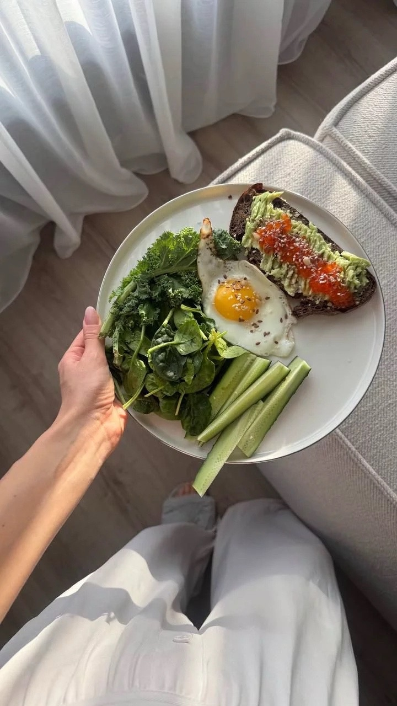
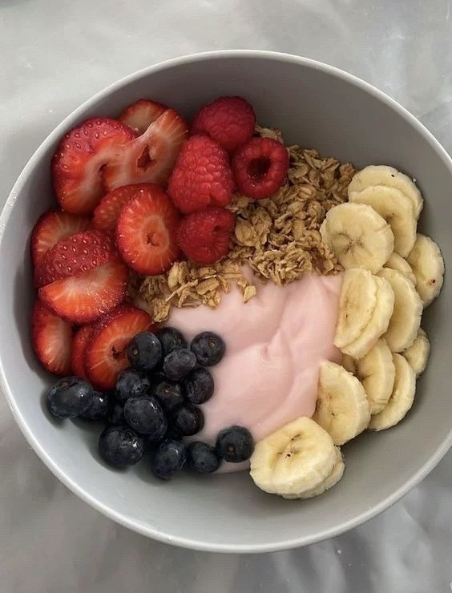
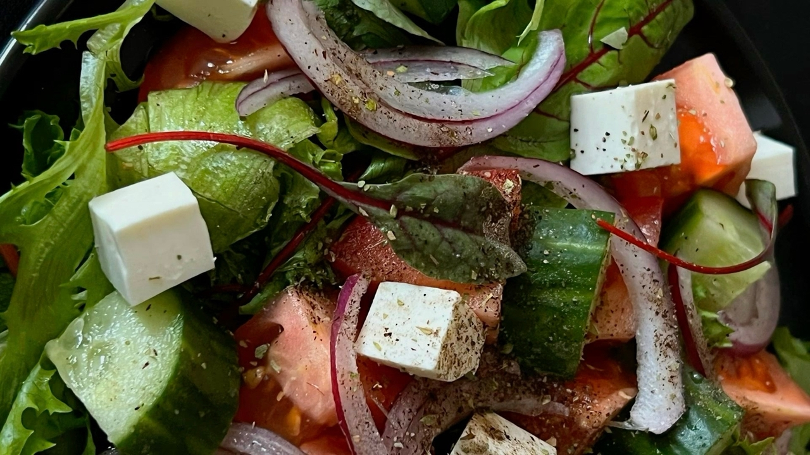

Здоровое питание
Здоровое питание — это не отказ от вкусной еды, а умение выбирать продукты, которые дают организму пользу. Рацион должен помогать быть активным, внимательным и энергичным.
В рационе должны быть овощи, фрукты, крупы, белковые продукты, полезные жиры и достаточное количество воды.
Важно не пропускать завтрак, не есть слишком много сладкого и фастфуда, а также следить за размером порций.

Диета на массонабор
Диета на массонабор нужна тем, кто хочет увеличить мышечную массу. Главный принцип — получать немного больше энергии, чем организм тратит за день, и при этом тренироваться.
Основа рациона: белок для мышц, сложные углеводы для энергии и полезные жиры для нормальной работы организма.
- Белки: яйца, курица, рыба, творог, говядина, бобовые.
- Углеводы: рис, гречка, овсянка, картофель, макароны из твёрдых сортов.
- Жиры: орехи, авокадо, оливковое масло, жирная рыба.
- Пример: овсянка и яйца утром, рис с курицей днём, творог или рыба вечером.

Диета на похудение
Диета на похудение помогает постепенно снижать вес без вреда для организма. Главный принцип — получать немного меньше калорий, чем человек тратит за день.
Важно не голодать, а выбирать более полезные продукты: овощи, фрукты, крупы, нежирное мясо, рыбу, яйца, творог и достаточное количество воды.
- Белки: курица, рыба, яйца, творог, индейка.
- Углеводы: гречка, овсянка, рис, цельнозерновой хлеб.
- Овощи и фрукты: огурцы, помидоры, зелень, яблоки, ягоды.
- Пример: овсянка с ягодами утром, курица с овощами днём, творог или рыба вечером.
Похудение vs массонабор
Диета на похудение
Цель — тратить больше калорий, чем получать. Важно сохранять белок, чтобы не терять мышцы.
меньше калорий больше овощей контроль сладкого
Пример: омлет, салат с курицей, гречка, рыба, овощи, вода.
Диета на массонабор
Цель — получать больше калорий и достаточно белка, чтобы мышцы росли после тренировок.
профицит калорий много белка силовые тренировки
Пример: овсянка, яйца, рис с мясом, творог, орехи, рыба.
